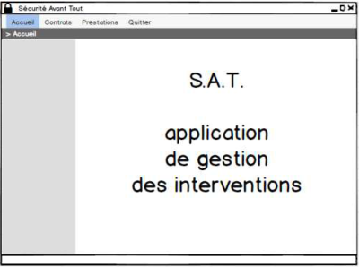

Durant le DUT informatique, les étudiants seront amenés à manipuler les Interfaces Homme-Machine. Ces dernières représentent les moyens et les outils afin qu'un humain puisse contrôler et communiquer avec une machine. L'IHM a pour but de trouver les moyens le plus efficaces, les plus accessibles et les plus intuitifs pour les utilisateurs afin de compléter une tache le plus rapidement et le plus précisément possible. En classe, nous utilisons le logiciel Lazarus qui permet de mettre au point des applications en plaçant directement des éléments tels que des panels, des boutons, des labels ou autre, et leur assigner une fonction grâce à un code. Cette application peut également être complétée par une base de données.
Le projet consistait en l'élaboration d'une application de gestion d’intervention pour une entreprise. Il nous était demandé, grâce à cette application, de pouvoir visualiser un ensemble d’interventions effectuée par des intervenant d’une société, en ajouter mais également en supprimer. Cette application se sert d’une base de données. Il fallait donc mettre au point ce projet en deux parties : Une partie graphique faisable entièrement sur Lazarus et comportant la base de l’application et une autre partie consistant à élaborer les procédures nécessaires sur MySQL Workbench afin de rendre la base de données compatible et modifiable avec l’application. Ce projet était à réaliser par groupe de 2. Les binômes devaient réaliser ce projet entre le 20 mai 2019 et le 18 juin 2019.
